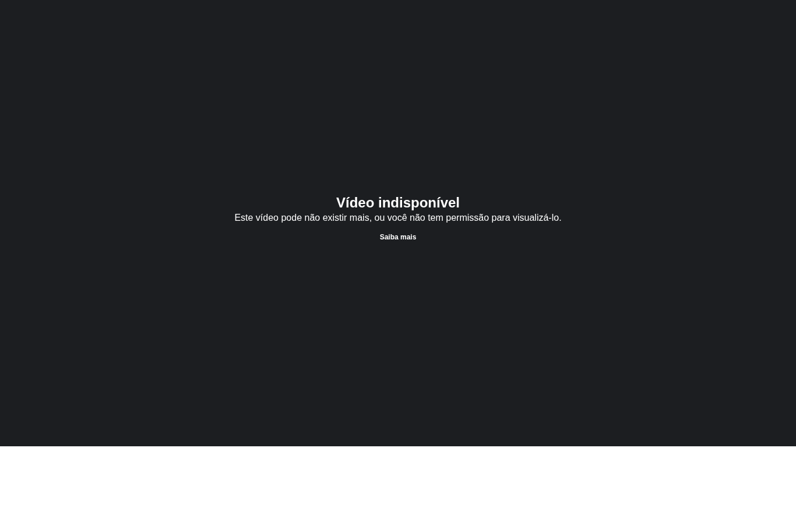

Cd2270d881b — facebook.com
https://www.facebook.com/brunnocampanha/videos/nesse-final-de-semanarua-amazonas-n-50-pen%C3%A1polisas-condi%C3%A7%C3%B5es-especias-do-banco-b/2345891416165173/
Prioridade: MEDIUM · Cenário: B_AMBIGUOUS_COMMUNICATION · Revisão humana: PENDING
1. Decisão Consolidada
Justificativa
A página em si retornou aviso de vídeo indisponível no Facebook, porém as informações indexadas na busca (E-DISC-001) e na própria URL registram a realização de um feirão de veículos com apelo comercial direto associando as marcas Banco BV e BV Financeira ('Mega Feirão BV Financeira'). Conforme as diretrizes para evidência parcial via Grounding, a menção a feirão e taxas do banco sem comprovação de identificação do COBAN e declaração regulatória impõe a classificação B_AMBIGUOUS_COMMUNICATION / REVIEW_REQUIRED. [Revisor: CONFIRM] Embora o vídeo esteja indisponível na página de destino durante a coleta, os dados indexados do evento (E-DISC-001) associados à URL (E-URL) evidenciam a promoção de feirão de veículos ('Mega Feirão BV Financeira', 'Feirão Alva') com anúncio de taxas reduzidas atribuídas ao Banco BV sem apresentação visível de CNPJ, razão social ou transparência regulatória de correspondente bancário. Adequado manter REVIEW_REQUIRED.
Limitações
- apenas a URL descoberta foi inspecionada; páginas internas, formulários e fluxos após cliques não foram acessados
- requisitos contratuais/internos não fornecidos: mapeamento limitado ao texto normativo
2. Screenshots


3. Catálogo de Evidências (Dados Brutos Observados)
| Ref | Tipo | Local | Conteúdo |
|---|---|---|---|
| E-URL | domain | url | URL final: https://www.facebook.com/brunnocampanha/videos/nesse-final-de-semanarua-amazonas-n-50-pen%C3%A1polisas-condi%C3%A7%C3%B5es-especias-do-banco-b/2345891416165173/ (domínio: www.facebook.com) |
| E-DISC-001 | text | search_index | Índice de busca (serper): PENÁPOLIS As condições especias do Banco BV desse evento ... — RUA AMAZONAS N. 50 ... Abaixo da tabela FIPE no Mega Feirão BV Financeira! ... O BANCO BV LIBEROU TAXAS REDUZIDAS DO FEIRÃO ALVA NESSE FIM DE SEMANA! |
| E-SHOT-VIEWPORT | screenshot | viewport | evidence/Cd2270d881b/attempt-1/viewport.png (sha256 6582584eaaf36570…) |
| E-SHOT-FULL | screenshot | page | evidence/Cd2270d881b/attempt-1/fullpage.png (sha256 6582584eaaf36570…) |
| E-TITLE | title | head | |
| E-FOLD | text | viewport (acima da dobra) | Vídeo indisponível Este vídeo pode não existir mais, ou você não tem permissão para visualizá-lo. Saiba mais |
| E-CONTACT-1 | contact | page | Saiba mais <https://www.facebook.com/help/396404120401278/list?ref=embed_video> |
4. Análise de Marca (gemini-3.8-flash, brand-analyst/v5)
Dimensões Avaliadas
| Dimensão | Sinal | Achado | Refs |
|---|---|---|---|
| VISUAL_IDENTITY | NOT_ASSESSED | O vídeo no Facebook encontra-se indisponível ou com restrição de visualização, inviabilizando a checagem visual de logotipos. | E-FOLD E-SHOT-VIEWPORT E-SHOT-FULL |
| DECLARED_COMMERCIAL_IDENTITY | CONFUSION | Perfil pessoal ou comercial de terceiro ('brunnocampanha') associado a evento comercial físico em Penápolis sem apresentação evidente de CNPJ ou razão social formal. | E-URL E-DISC-001 |
| CORRESPONDENT_TRANSPARENCY | CONFUSION | Menção a 'Mega Feirão BV Financeira' e condições especiais do Banco BV sem observância transparente das exigências da Resolução CMN nº 4.935/2021. | E-DISC-001 |
| INSTITUTIONAL_LANGUAGE | CONFUSION | Uso de linguagem promocional atribuindo liberação de taxas ao Banco BV em evento comercial multimarcas/feirão de veículos. | E-DISC-001 |
| LOGO_USAGE | NOT_ASSESSED | Logotipo não avaliado devido à indisponibilidade da mídia do vídeo. | E-SHOT-VIEWPORT |
| SERVICE_JOURNEY | NEUTRAL | Divulgação de feirão presencial de veículos com financiamento bancário. | E-DISC-001 |
| CONTACT_CHANNELS | NEUTRAL | Indicação apenas de endereço físico ('Rua Amazonas, nº 50, Penápolis') no texto indexado. | E-DISC-001 E-URL |
| CONSUMER_CONFUSION | CONFUSION | Potencial confusão ao associar o evento diretamente à marca 'BV Financeira'/'Banco BV' sem esclarecer a natureza da intermediação. | E-DISC-001 |
Indícios de Confusão
- [MEDIUM] INSTITUTIONAL_LANGUAGE: Trecho indexado indica promoção de feirão de veículos ('Mega Feirão BV Financeira', 'Feirão Alva') com afirmações como 'O BANCO BV LIBEROU TAXAS REDUZIDAS DO FEIRÃO ALVA NESSE FIM DE SEMANA!', sem identificação clara de razão social, CNPJ ou aviso regulatório de correspondente bancário. — E-DISC-001 E-URL
- [MEDIUM] CORRESPONDENT_TRANSPARENCY: Ausência de declaração de correspondente bancário nos dados indexados e impossibilidade de verificação completa devido à indisponibilidade do vídeo no momento da coleta. — E-DISC-001 E-FOLD E-SHOT-VIEWPORT
Indícios de Relação Legítima
- Nenhum
Fatos Observados
- A URL corresponde a uma publicação de vídeo na página do Facebook 'brunnocampanha'.
- Ao carregar a página, é exibida a mensagem 'Vídeo indisponível. Este vídeo pode não existir mais, ou você não tem permissão para visualizá-lo.'
- O registro indexado no mecanismo de busca (E-DISC-001) contém o texto promocional de feirão de veículos em Penápolis (Rua Amazonas nº 50) citando 'Mega Feirão BV Financeira' e 'O BANCO BV LIBEROU TAXAS REDUZIDAS DO FEIRÃO ALVA NESSE FIM DE SEMANA!'.
- Não foi possível verificar a imagem do logotipo ou o cumprimento integral da Resolução CMN nº 4.935/2021 devido à indisponibilidade da mídia.
Incertezas
- Não é possível determinar se o vídeo original continha a logo oficial atual ou a logo antiga (B vermelho e V azul), nem se apresentava os avisos legais no rodapé/legenda.
Síntese do Analista
A página em si retornou aviso de vídeo indisponível no Facebook, porém as informações indexadas na busca (E-DISC-001) e na própria URL registram a realização de um feirão de veículos com apelo comercial direto associando as marcas Banco BV e BV Financeira ('Mega Feirão BV Financeira'). Conforme as diretrizes para evidência parcial via Grounding, a menção a feirão e taxas do banco sem comprovação de identificação do COBAN e declaração regulatória impõe a classificação B_AMBIGUOUS_COMMUNICATION / REVIEW_REQUIRED.
5. Identidade do Responsável
domain:facebook.com
Nenhum CNPJ ou razão social identificáveis no conteúdo coletado.
Fatos Observados
| Tipo | Valor | Ref | Contexto |
|---|---|---|---|
| domain | facebook.com | E-URL | |
| social_profile | https://www.facebook.com/brunnocampanha/videos/nesse-final-de-semanarua-amazonas-n-50-pen%C3%A1polisas-condi%C3%A7%C3%B5es-especias-do-banco-b/2345891416165173/ | E-URL | |
| social_profile | https://www.facebook.com/help/396404120401278/list?ref=embed_video | E-CONTACT-1 |
Inferências de Associação (Não são Fatos)
- entidade agrupada pelo domínio registrável; um mesmo estabelecimento pode ter outros domínios não associados
- base da associação: domínio (sem CNPJ)
6. Mapeamento de Conformidade (Hipóteses)
Mapeamento indicativo para apoio à auditoria. Não constitui conclusão regulatória; a decisão definitiva pertence à auditoria.
Res. CMN 4.935/2021, art. 14, inciso II — NO_INDICATION_OBSERVED
Fonte: NORMATIVE
Art. 14. O contrato de correspondente deve estabelecer: [...] II - vedação à utilização, pelo contratado, de logomarca ou de outros atributos que sejam similares aos adotados pela instituição contratante em suas agências, postos de atendimento, sítio eletrônico na internet, aplicativo ou outras plataformas de comunicação em rede;
Evidência observada: —
Res. CMN 4.935/2021, art. 14, inciso III, alíneas a e b — NOT_APPLICABLE_UNLESS_COBAN
Fonte: NORMATIVE
Art. 14. O contrato de correspondente deve estabelecer: [...] III - divulgação ao público, pelo contratado, de sua condição de prestador de serviços à instituição contratante, identificada pelo nome com que é conhecida no mercado, com descrição dos produtos e serviços oferecidos e canais de contato da instituição contratante, inclusive de sua ouvidoria, em local visível, em destaque e em formato legível, por meio de: a) sítio eletrônico do correspondente na internet, acessível na página inicial; b) aplicativo e outras plataformas de comunicação em rede do correspondente; [...]
Hipótese: Divulgação ao público da condição de prestador de serviços/parceria ausente, insuficiente, ambígua ou sem destaque. A norma disciplina correspondentes contratados; o responsável não foi identificado como correspondente.
Evidência observada: E-DISC-001 E-FOLD E-SHOT-VIEWPORT E-URL
Informação faltante:
- confirmar se o responsável é correspondente contratado (relação pública da contratante — art. 21 — ou base interna)
- canais de contato/ouvidoria da contratante não observados no material coletado (podem existir em páginas não inspecionadas)
Res. CMN 4.935/2021, art. 3º — NO_INDICATION_OBSERVED
Fonte: NORMATIVE
Art. 3º O correspondente atua por conta e sob as diretrizes da instituição contratante, que assume inteira responsabilidade pelo atendimento prestado aos clientes e usuários por meio do contratado.
Evidência observada: —
Se o responsável não for correspondente contratado, os indícios podem caracterizar uso indevido de marca ou fraude, fora do escopo da Res. 4.935: avaliar encaminhamento às áreas jurídica/segurança.
Limitações: requisitos contratuais/internos não fornecidos: mapeamento limitado ao texto normativo
7. Revisão Crítica (gemini-3.8-flash)
Decisão: CONFIRM → REVIEW_REQUIRED / MEDIUM
Embora o vídeo esteja indisponível na página de destino durante a coleta, os dados indexados do evento (E-DISC-001) associados à URL (E-URL) evidenciam a promoção de feirão de veículos ('Mega Feirão BV Financeira', 'Feirão Alva') com anúncio de taxas reduzidas atribuídas ao Banco BV sem apresentação visível de CNPJ, razão social ou transparência regulatória de correspondente bancário. Adequado manter REVIEW_REQUIRED.
| Tema | Severidade | Questionamento | Refs |
|---|---|---|---|
| Página com vídeo indisponível no momento da coleta | LOW | A URL do Facebook exibe mensagem informando que o vídeo não existe mais ou requer permissões (E-FOLD, E-SHOT-VIEWPORT), impedindo a análise visual da peça completa. | E-FOLD E-SHOT-VIEWPORT E-SHOT-FULL |
| domain_attribution | MEDIUM | Responsável pela página não identificado; a conclusão sobre a marca não pode ser atribuída a um estabelecimento específico. | E-URL |
8. Origem da Descoberta
| Fonte | Consulta / hipótese | URL original | Título / trecho |
|---|---|---|---|
| serper | ("Banco BV" OR "bv financeira") financiamento (loja OR revenda OR correspondente OR promotora) "Amazonas" -site:bv.com.br -site:bancobv.com.br -site:bvfinanceira.com.br -site:bvinvestimentos.com.br -site:napista.com.br -site:bvopen.com.br -site:meufinanciamentosolar.com.br -site:votorantim.com.br -site:vam.com.br -site:reclameaqui.com.br -site:jusbrasil.com.br -site:jus.br H5-establishment:regiao-Norte | https://www.facebook.com/brunnocampanha/videos/nesse-final-de-semanarua-amazonas-n-50-pen%C3%A1polisas-condi%C3%A7%C3%B5es-especias-do-banco-b/2345891416165173/ | PENÁPOLIS As condições especias do Banco BV desse evento ... RUA AMAZONAS N. 50 ... Abaixo da tabela FIPE no Mega Feirão BV Financeira! ... O BANCO BV LIBEROU TAXAS REDUZIDAS DO FEIRÃO ALVA NESSE FIM DE SEMANA! |
9. Cadeia de Custódia da Coleta
sha256 ce474a2ff9f5a8e1357cd5ce93dcbffc88e3a50a78dac8ad767a8e68f789b732
Original: https://www.facebook.com/brunnocampanha/videos/nesse-final-de-semanarua-amazonas-n-50-pen%C3%A1polisas-condi%C3%A7%C3%B5es-especias-do-banco-b/2345891416165173/
Final: https://www.facebook.com/brunnocampanha/videos/nesse-final-de-semanarua-amazonas-n-50-pen%C3%A1polisas-condi%C3%A7%C3%B5es-especias-do-banco-b/2345891416165173/
| Artefato | Caminho | SHA-256 | Bytes |
|---|---|---|---|
| screenshot_viewport | evidence/Cd2270d881b/attempt-1/viewport.png | 6582584eaaf365704a87f2ea65ba002db96677626235041a7d24a4dd3b2e3e06 | 20695 |
| screenshot_full | evidence/Cd2270d881b/attempt-1/fullpage.png | 6582584eaaf365704a87f2ea65ba002db96677626235041a7d24a4dd3b2e3e06 | 20695 |
| html | evidence/Cd2270d881b/attempt-1/page.html.txt | 2c317e8f1375f7f706800e6a86185f38be8826ff0256327ea05e753d4cee46b7 | 49849 |
| text | evidence/Cd2270d881b/attempt-1/text.txt | d470abc2afe645f7d0e83cb4e34f53cd1722e45b6fea4b934f1d75f2671cd820 | 116 |
| page_data | evidence/Cd2270d881b/attempt-1/page.json | d3dce59ff0837d6747cee2f8f9df14d4a1052a12f397ec2699819e611cff6928 | 903 |
Ocorrências e conteúdo não inspecionado
- apenas a URL descoberta foi inspecionada; páginas internas, formulários e fluxos após cliques não foram acessados
10. Histórico de Estados
| Quando | De | Para | Nota |
|---|---|---|---|
| 2026-11-25T18:12:05+00:00 | DISCOVERED | QUEUED | prioritised (score 2.0) |
| 2026-11-25T18:42:12+00:00 | QUEUED | COLLECTING | |
| 2026-11-25T18:42:16+00:00 | COLLECTING | COLLECTED | |
| 2026-11-25T18:42:16+00:00 | COLLECTED | ANALYZING | |
| 2026-11-25T18:42:28+00:00 | ANALYZING | REVIEWING | |
| 2026-11-25T18:42:38+00:00 | REVIEWING | COMPLETED |